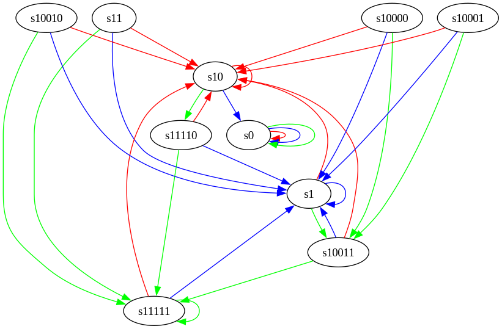

Extending run-time verification for the kernel
There are a lot of things people expect the Linux kernel to do correctly. Some of these are checked by testing or static analysis; a few are ensured by run-time verification: checking a live property of a running Linux system. For example, the scheduler has a handful of different correctness properties that can be checked in this way. Nam Cao posted a patch series that aims to extend the kinds of properties that the kernel's run-time verification system can check, by adding support for linear temporal logic (LTL). The patch set has seen eleven revisions since the first version in March 2025, and recently made it into the linux-next tree, from where it seems likely to reach the mainline kernel soon.
Run-time analysis is present everywhere in the kernel; lockdep, for example, is a kind of run-time verification. But instrumenting the whole kernel for each kind of verification that people may want to perform is infeasible. The run-time verification subsystem allows for tracking more complex properties by hooking into the kernel's existing tracing infrastructure. For example, run-time verification can be used to ensure that a system schedules tasks correctly; there are options to ensure that task switches only occur during a call to __schedule(), that the scheduler is called in a context where it is safe to do so, and various other properties of the scheduler interface that depend on the global state of the system. Each property that is checked in this way is represented by a per-CPU or per-task state machine called a monitor. Tracing events drive the transitions in these machines. If they ever reach an error state, the kernel can be configured to log an error message or panic.
The use of state machines has the nice property of keeping the actual overhead of the monitors as low as possible. A 2019 paper by Daniel Bristot de Oliveira, Tommaso Cucinotta, and Rômulo Silva de Oliveira showed that the overhead of updating a state machine was actually lower than the overhead of just recording tracing events to a file for later analysis. Because state machines, ironically, do not track much state, the per-task memory usage of the system is quite small as well.
Writing state machines by hand is a tedious process, though, so the kernel includes an rvgen tool that can convert a state machine described in Graphviz's DOT format into appropriate C code. There is a bit of manual work to do in order to connect the generated state machine to the correct tracing events, but rvgen also generates appropriate kernel configuration and header files, and provides a checklist of what the programmer will need to implement themselves.
The problem Cao ran into was that simple deterministic state machines are too inflexible to easily represent some desirable properties. For example, it would be nice to have a monitor that can detect priority inversion in realtime tasks, but representing this property as a state machine is complex and error prone. Cao's solution is to add another specification language to rvgen that can handle more complicated statements. The resulting code is still compiled to a state machine — specifically, a non-deterministic Büchi automaton — but it can express properties about the future execution of a task more easily.
The new specification language has a custom syntax, but the underlying semantics are taken from linear temporal logic (LTL), which is a kind of modal logic. LTL extends classical Boolean logic with a notion of time. Unlike some more complicated modeling systems, LTL only deals with a single, discrete, non-branching timeline — hence the "linear" part of the name. In addition to the fundamental operations on Booleans (such as "or" and "not"), LTL has two new operators "next" and "until". In LTL, "next A" means that some proposition A must be true on the next time-step. Similarly, "A until B" means that A must be true at all subsequent points in time until (and possibly after) B is true.
Just as classical logic has derived operators such as "implies", these two temporal operators can be combined to produce more helpful operators like "eventually" and "always". This makes it possible to express constraints such as "a task that acquires a lock must release the lock before exiting" as something like "it is always the case that a task that acquires a lock does not exit until it releases the lock". In Cao's proposed syntax, that would look like this:
RULE = always (ACQUIRE imply ((not EXIT) until RELEASE))
Upper-case words correspond to events or rules; the first rule of the file is used to generate the state machine. Lower-case words are operators. Cao's simple code does not implement operator precedence, so parentheses are mandatory on pain of surprising behavior.
The code generator is currently fairly basic. The above rule compiles to a five-state non-deterministic state machine, but many sets of states are unreachable. To illustrate the kind of state machine produced for a simple property like the above, I took the generated Büchi machine and flattened it into a deterministic state machine shown in the diagram below. Red edges represent acquire events, blue edges represent exit events, and green edges represent release events. After pruning unreachable states, the machine looks like this:

State s0 is the rejecting state, which indicates that there was a problem. Much of the complexity in this example comes from correctly tracing situations where it is not certain whether a lock has been acquired or not. In any case, this kind of automaton would be painful to write by hand; the generated code is much easier to deal with. In order to use it, the programmer must fill in the implementation of the ltl_atoms_init() function, which sets the initial state of the monitor, and then arrange for the ltl_atom_update() function to be called from appropriate tracepoints. The rest of the integration with the run-time verification subsystem is handled by the generated code. The actual state machine itself is generated and placed in a separate header file.
The patch set includes two example definitions for run-time monitors using the new syntax. Both have to do with ensuring that realtime tasks do not sleep incorrectly, and are simple enough that they probably could have been written by hand. But the hope is that having a generator available will enable other kernel developers to write more complicated run-time checks in their areas of expertise.
| Index entries for this article | |
|---|---|
| Kernel | Development tools |
Posted Jul 30, 2025 17:38 UTC (Wed)
by npws (subscriber, #168248)
[Link]
Posted Aug 2, 2025 5:22 UTC (Sat)
by alison (subscriber, #63752)
[Link] (2 responses)
It's wonderful that the pioneering work of Daniel Bristot de Oliviera is moving forward despite his loss. What relationship should the runtime verification have with the Clang thread-safety analysis described in the Capability analysis for the kernel article which LWN published in March? And then in addition to lockdep, there's the dynamic KCSAN analyzer, which the article does not mention. Thanks for this detailed and clear explanation, which certainly exceeds by a mile the responsibility of journalists by providing an example. The example does raise some questions. The function ltl_possible_next_states() takes a state parameter which appears to be the same as the ltl_buchi_state. Presumably all the states and the allowed transitions between them should be represented in the diagram. We see there s0, s1, s10 (presumably s2), s11 (presumably s3) and . . . oops, where's s4? So s4 must instead be s10000 and s10 must be s1 . . . but there's an s1! Also, all the arrows leading out of s0 point back to itself, but the switch-case statement implies that s0 can transition to other states. What do the arrow colors mean? Maybe nothing, since arrows of 3 colors point from s0 to itself. Inspired by the generation described in the text, I asked Copilot to generate an ASCII state machine based on the message set of a public API. After a couple of iterations taking perhaps 10 minutes total, it produced something reasonable. Notably, the diagram was better than what I made during an hour-long first attempt. Should the kernel's Rust, about which Daroc has written, also want this analysis, or maybe it doesn't need it? A part 2 of this article which talks more about these various approach to concurrency checking would be welcome!
Posted Aug 2, 2025 9:18 UTC (Sat)
by excors (subscriber, #95769)
[Link] (1 responses)
S0 to S4 are the individual states. The code's `mon->states` and `next`, and the 's10001' etc in the diagram, are bitmasks of those states. E.g. 's10001' means the machine is currently known to be in either S0 or S4.
I assume `ltl_possible_next_states` is called multiple times, once for each bit that's set in `mon->states`, and all the `next` outputs are merged into a single bitmask and copied back into `mon->states`.
The arrow colours are explained in the article (red=acquire, green=release, blue=exit).
's0' is an abbreviation of 's00000' and means it's not in any of S0-S4, which I think is equivalent to halting the non-deterministic state machine, so it's represented as looping back to itself. (Here it's triggered by the error case of getting an exit event in the middle of an acquire-release pair.)
Posted Aug 4, 2025 13:35 UTC (Mon)
by daroc (editor, #160859)
[Link]
Nice work
different kinds of verification
different kinds of verification
different kinds of verification